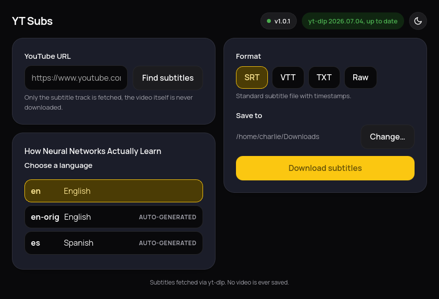

Get the subtitles.
Skip the video.
Paste a YouTube URL, pick a language and a format, get a subtitle
file. That's the whole app. The video is never downloaded,
skip_download is hardcoded on.

Small on purpose
No account, no telemetry, no browser required. One window, one job.
Subtitles only
The video track is never requested from YouTube. Nothing to wait for, nothing large to store.
English listed first
Every available language shows up, manual and auto-generated tracks both included, English sorted to the top.
Keeps itself current
Checks yt-dlp and its own version on a schedule. When YouTube changes something, an update is one click away.
Light and dark
Follows the desktop by default, with a toggle if it guesses wrong.
Four formats, one download
Pick the one that fits what you're doing with it.
SRT
Standard subtitle file with timestamps. Works everywhere.
VTT
WebVTT, the format most web video players expect natively.
TXT
Plain transcript. Timestamps and formatting stripped out, just the words.
Raw
Whatever YouTube actually served, unconverted.
Download YT Subs
Single AppImage. No install, no Docker, no account.
python3 (3.10+), which every current Linux desktop
already has. Nothing to install.
Already present on most GNOME-based desktops. Full details and
source on the GitHub repo.